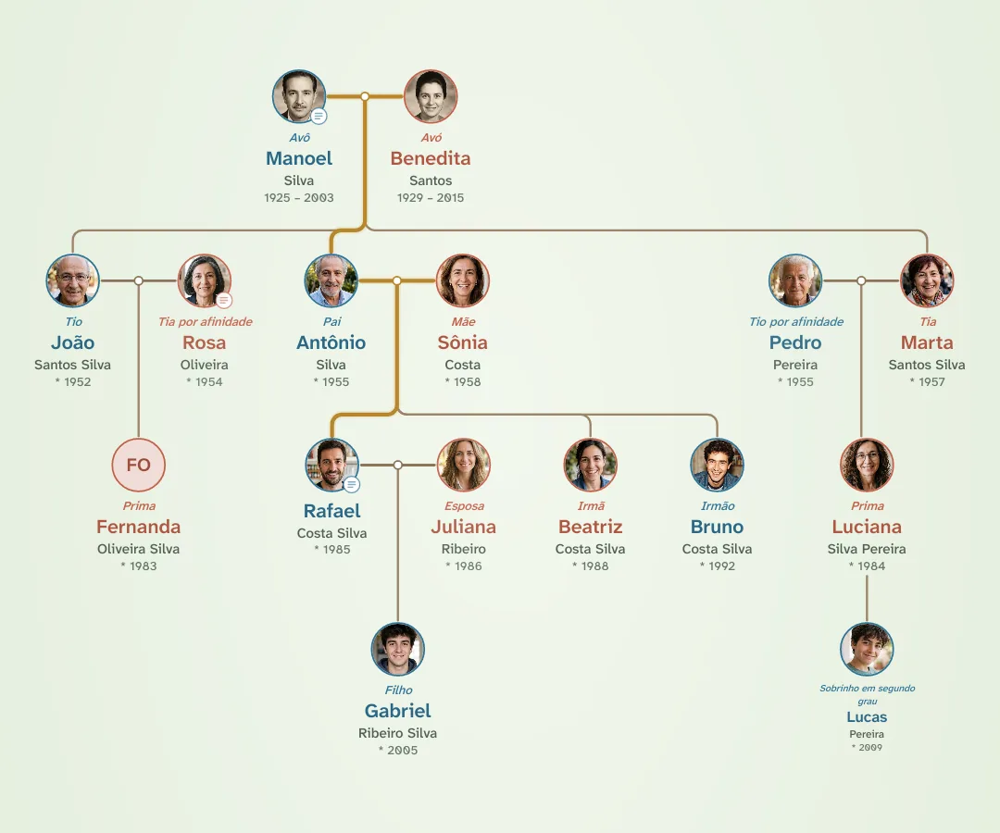

Calculadora de parentesco: primo de segundo grau, tio-avô e sobrinho-neto
O filho do seu primo é seu primo ou seu sobrinho? E por que, para a lei, primos são parentes de quarto grau? Escolha onde está o antepassado que vocês têm em comum e a calculadora mostra o nome do parentesco e o grau.
O antepassado em comum é a pessoa de quem vocês dois descendem. Com um primo, são os seus avós; com um primo de segundo grau, os seus bisavós. Se um descende do outro (um neto, uma bisavó), escolha “Eu” ou “A outra pessoa”.
Como se chama cada parente
Tudo depende de quantas gerações há entre cada um de vocês e o antepassado em comum:
- Irmãos: têm os mesmos pais.
- Primos (ou primos de primeiro grau): têm os mesmos avós. Os pais de vocês são irmãos.
- Primos em segundo grau: têm os mesmos bisavós. Os pais de vocês são primos entre si.
- Tio-avô ou tia-avó: o irmão ou a irmã de um avô. Você é sobrinho-neto dele.
- Tio em segundo grau: o primo do seu pai ou da sua mãe. Você é sobrinho em segundo grau dele.
Então o filho do seu primo não é seu primo: é seu sobrinho em segundo grau. Já os seus filhos e os dele são primos em segundo grau.
Tabela de parentesco
Procure na linha o que o antepassado em comum é para você, e na coluna o que ele é para a outra pessoa. Na casa está o que essa pessoa é sua (no feminino: tia, prima, sobrinha-neta…).
| Para você ↓ · para a outra pessoa → | Pais | Avós | Bisavós | Trisavós | Tetravós |
|---|---|---|---|---|---|
| Pais | irmão | sobrinho | sobrinho-neto | sobrinho-bisneto | sobrinho-trineto |
| Avós | tio | primo | sobrinho em segundo grau | sobrinho-neto em segundo grau | sobrinho-bisneto em segundo grau |
| Bisavós | tio-avô | tio em segundo grau | primo em segundo grau | sobrinho em terceiro grau | sobrinho-neto em terceiro grau |
| Trisavós | tio-bisavô | tio-avô em segundo grau | tio em terceiro grau | primo em terceiro grau | sobrinho em quarto grau |
| Tetravós | tio-trisavô | tio-bisavô em segundo grau | tio-avô em terceiro grau | tio em quarto grau | primo em quarto grau |
Graus de parentesco no Código Civil
Pela lei (art. 1.594 do Código Civil), conta-se o grau subindo de uma pessoa até o antepassado em comum e descendo depois até a outra: cada geração é um grau. Por isso os primos, que no dia a dia são “de primeiro grau”, para a lei são parentes de quarto grau.
| Grau | Parentes |
|---|---|
| 1º | Pais e filhos |
| 2º | Avós, netos e irmãos |
| 3º | Bisavós, bisnetos, tios e sobrinhos |
| 4º | Primos, tios-avôs e sobrinhos-netos |
Com a família do cônjuge (sogros, cunhados…) o parentesco é por afinidade: os sogros em primeiro grau, os cunhados em segundo.
A sua árvore, com o parentesco de cada um
No Ramo não precisa calcular nada: ative “Parentesco” e cada cartão da árvore mostra o que aquela pessoa é da pessoa principal (pai, tia, primo, sobrinha, cunhado, genro…), inclusive a família por afinidade.

É grátis para começar, e a árvore pode ser compartilhada em PDF com toda a família para que cada um veja onde está.
Mais guias